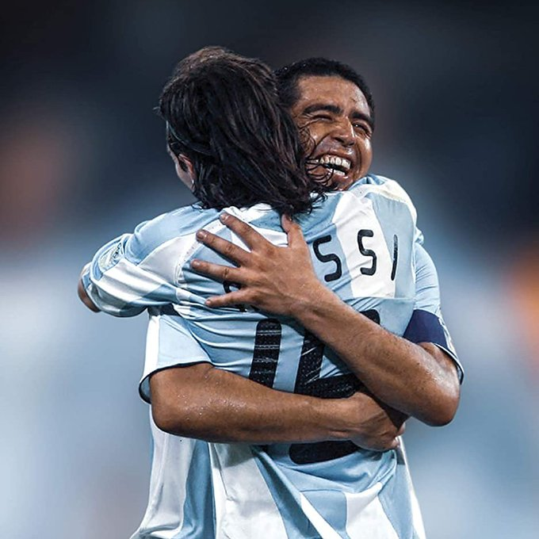

El 10 de Torcuato
El arribo de Riquelme a Argentinos Juniors se produjo a comienzos de 1991, procedente de Parque, un club de baby fútbol. En sus primeros años, no la pasaría nada bien, al ser relegado al banco de suplentes porque aún no había desarrollado su físico. Su padre llegó a dudar de su estadía en Argentinos, y quiso cambiarlo de club, hasta que Carlos Balcaza, técnico de la categoría 1980, lo cambió de posición de enganche a volante central, y la carrera de Riquelme despegó.
Comenzó a sacar diferencias respecto de sus compañeros y en simultáneo pegó el estirón físico: se estilizó. Participó de varias giras internacionales al cual el club era invitado, una en Brasil, y dos para la sub-17 en Gradisca, Italia. La primera vez, perdieron el tercer puesto ante el Barcelona. Ya la segunda le ganaron la final a la Roma con Riquelme siendo figura. Junto a ello llegaron sus primeras convocatorias a las Selecciones Juveniles del equipo nacional.

En 1996, el rápido ascenso de Riquelme lo llevó a jugar 8 partidos para la Reserva del primer equipo, aunque su venta ya era inminente. Unos empresarios compraron su ficha, y pudo haber ocurrido un traspaso para River Plate, pero en ese entonces la mamá de Riquelme le negó rotundamente la entrada a su casa si él aceptaba debido al fanatismo que tenía su familia por Boca Juniors.
